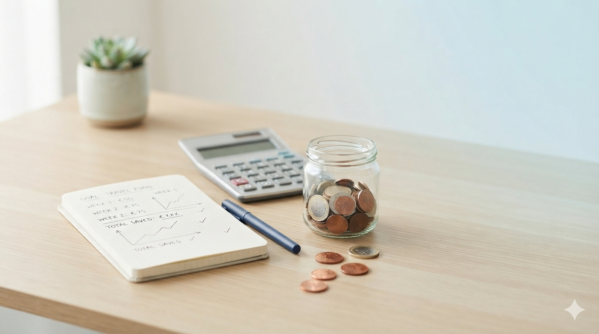

How to Set a Savings Goal You Can Actually Reach
Saving money is easier when you know what you are working toward. Whether you want a new phone, a vacation, or money for unexpected expenses, a clear target can turn a vague intention into a practical plan.

Saying "I should save more money" is a good starting point, but it does not tell you how much you need, how long it might take, or what you should do each month.
A useful savings goal answers three questions: what are you saving for, how much money do you need, and when would you like to have it? You can then work backward to find a monthly amount that fits your budget.
Your first plan does not have to be perfect. Prices change, unexpected expenses happen, and your priorities may be different a few months from now. The purpose of a savings goal is to give you a starting point that you can adjust as needed.

A smaller contribution you can make consistently is often more practical than a large monthly target that leaves you short of money for essential expenses.

Give your savings a specific purpose
Begin by deciding what you want your savings to help you achieve. A specific goal gives you a clearer target than simply trying to save whatever money happens to be left over.
For example, you could save for:
Naming the goal also helps you distinguish between different priorities. Money set aside for an upcoming dental appointment, for example, has a different purpose from money you are saving for a holiday.
If you have several goals, you do not have to work toward all of them at the same time. Start with the most important one or divide your available savings between goals according to your priorities.

Choose a realistic target amount
Once you know what you are saving for, estimate the total amount you will need. For a purchase, check its current price. For a vacation, include transport, accommodation, food, activities, and a reasonable allowance for unexpected costs.
If the final price is uncertain, use your best estimate and review it later. You can change the target if you find a better price or discover that you need to budget for something you initially missed.
Maria wants a new phone
Maria finds a phone that costs €900. She already has €200 saved specifically for it, so she does not need to save another €900. She needs to cover the difference.
The basic calculation is:
In Maria's case, that is €900 − €200 = €700. Remember to count only money that is genuinely available for this goal. If some of her savings are needed for rent, bills, or another upcoming expense, she should not treat that money as available for the phone.

Choose a deadline and calculate your monthly target
A target amount tells you how much you need, but a deadline helps you decide how quickly you want to get there. Choose a date that makes sense for the purchase and your circumstances.
Maria needs another €700 for her phone and would like to buy it in seven months. To work out the amount she would need to save each month, she divides the remaining amount by the number of months available.
Maria now has a clear plan: save approximately €100 each month for seven months. This assumes that she does not withdraw money from the goal and that the phone still costs €900 when she buys it.
If you have already started saving, use the amount still needed, not the original target. If your deadline is flexible, compare a few timelines to see which monthly amount feels manageable.
Monthly target = (Target amount − Amount already saved) ÷ Number of months remaining.
This calculation assumes that you are adding money regularly and does not include interest or investment returns. For a simple savings goal, it is a useful starting estimate.
Make sure the plan fits your budget
Before committing to a monthly target, look at your actual income and expenses. Account for essentials such as housing, food, utilities, transportation, debt payments, and other obligations. It is important not to plan to save money that you will need to cover those costs.
Suppose Maria realizes that saving €100 every month is too difficult. She could save €70 per month instead. Because she still needs €700, it would take ten full monthly contributions of €70 to reach the remaining amount.
Compared with her original seven-month plan, Maria would need about three additional months. That may be a reasonable trade-off if it allows her to cover her essentials and avoid putting unnecessary pressure on her budget.
You can also lower the target by choosing a less expensive option, or postpone the deadline until you have more room in your budget. The best plan is not necessarily the fastest one; it is one that makes progress without creating new financial problems.
Adjust your target or deadline if your original plan is too difficult to maintain. Your essential expenses should come first.

Understand that progress still counts
Reaching 100% of your target is useful, but falling short does not automatically mean your effort was wasted. Your circumstances might change, the price might change, or you might decide that another option is better.
Imagine Maria has the original €200 and has saved another €700 toward her €900 phone. She now has €900 in total, assuming the original €200 remains available for the same goal. She has reached the target and can consider the purchase.
Now imagine she has saved only €500 more. Her total is €700, which is still meaningful progress toward the phone.
Maria has saved approximately 78% of her target and has €200 left to save.
She could continue saving, look for a lower price, or consider a less expensive phone. The right choice depends on what she needs and can afford. She should avoid taking on costly debt just to reach a savings goal sooner.
Review your goals when your priorities change
Sometimes a different expense becomes more important than the thing you originally planned to buy. For example, you might be saving for something fun when you discover that you need to pay for necessary dental treatment.
In that situation, it can make sense to change your priorities. A savings plan should reflect your current needs, not force you to follow an old decision that no longer makes sense.
Alex has two savings goals
Alex has €50 saved for a collectible wand, but a necessary dental expense has become more urgent. He decides to use that €50 toward the dental cost instead.
The wand goal now has no money assigned to it, but Alex has not lost the €50. He has chosen a different purpose for it. He can begin saving for the wand again later, when the more urgent expense has been addressed.
If you change a goal, update your records so that they reflect where your money is actually assigned. That makes it easier to avoid counting the same money toward two different goals.

Be careful when moving money between goals
If you track several savings goals, remember that moving money from one goal to another does not increase your total savings. It only changes which purpose that money is assigned to.
Imagine that you have €400 assigned to a new phone and €50 assigned to a dental visit.
If you reassign the €50 from the dental goal to the phone goal, the phone goal will have €450 assigned to it and the dental goal will have €0. Your total savings remain €450.
When you move money between goals, update both goals so your records match the actual amount you have saved.
Reassigning money can be sensible when your needs change. The important thing is to make the decision deliberately and understand what it means for the goal you are moving money away from.
Track what you actually save
Once you have a plan, record the money you actually put aside. A monthly target is a guide, not proof that the money has already been saved.
For example, you might plan to save €100 this month but manage to save only €70. Record €70. If you save €150 next month, record that amount too. Your contributions do not have to be identical every month.
You have saved €500 toward a €2,000 target. You have €1,500 remaining, or 75% of the target.
Tracking gives you a more accurate picture of your progress. It helps you see how much remains, whether your deadline is still realistic, and whether you need to adjust your monthly contribution.
A savings tracker can make this easier by keeping each goal, its target amount, and its recorded contributions together. RealSavings Tracker can help you organise your goals and follow their progress in one place.

Example: planning a vacation
Alex wants to go on vacation and estimates that the trip will cost €2,000. He already has €500 saved and would like to travel in ten months.
Alex needs another €1,500. Dividing €1,500 by ten months gives a monthly target of €150. If he makes ten monthly contributions of €150 and does not withdraw any of the money, he will have €2,000 in total.
The plan can change if circumstances change. If Alex can only save €100 per month, he would add €1,000 over ten months and have €1,500 in total, assuming the original €500 remains saved. He could then postpone the trip, reduce its cost, or choose another option.
If the trip ends up costing less than expected, he may reach his goal sooner or have money left over. If it costs more, he can revise the target and decide whether the additional expense is worth it.
The point is not to predict every detail perfectly. It is to make a plan based on what you know today and update it when you have better information.
Create your first savings goal
You can use these five steps to turn your own idea into a savings plan:
Choose one thing you want or need to save for.
Estimate its total cost and subtract the amount already saved.
Choose a deadline and calculate the monthly amount required.
Check that the plan fits your budget and essential expenses.
Record your contributions and review the plan regularly.
A savings goal should work for your life.
Give your savings a clear and specific purpose.
Calculate what remains after accounting for money already saved.
Choose a monthly amount that does not compromise essential expenses.
Allow more time if your original deadline is unrealistic.
Update your goals when your priorities or circumstances change.
Track actual contributions rather than relying on your original plan.
Your savings plan can change with you
Setting a savings goal does not mean that you have to follow the same plan forever. It means you have a clearer idea of what you want to achieve, what it might cost, and how you could work toward it.
Start with one goal, calculate the amount you still need, and choose a monthly contribution that fits your situation. If the plan becomes difficult, review the target or deadline instead of ignoring your essential expenses.
Even if you save less than planned in a particular month, recording that progress gives you a more accurate picture of where you stand. You can then make your next decision based on the money you actually have.
A realistic savings goal is not a promise that everything will go according to plan. It is a useful way to give your money a purpose and make more informed decisions along the way.
Ready to give your savings a purpose?
Create a goal, set a target amount, and track your progress with RealSavings Tracker. Start with one goal and adjust your plan as you go.
Start Saving